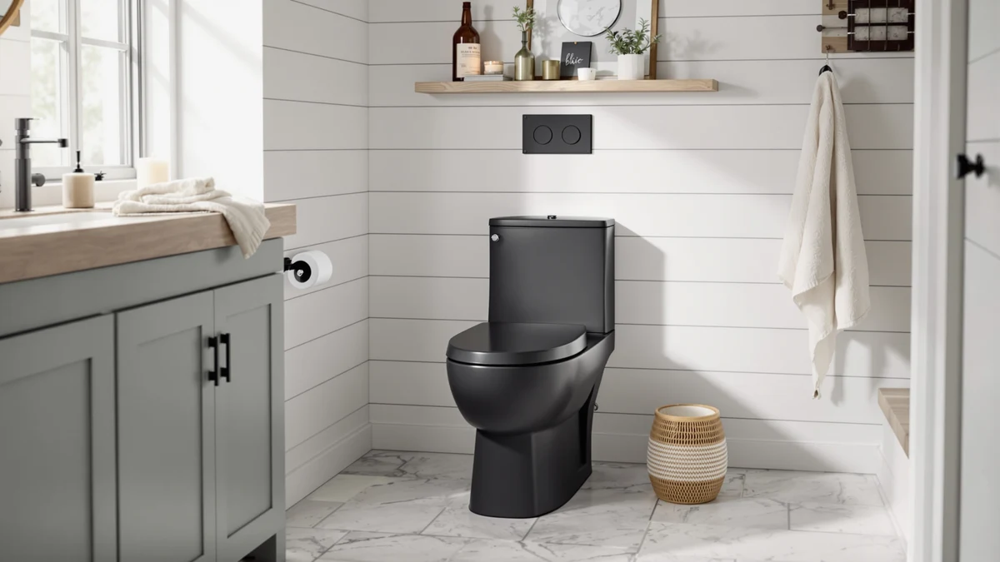

Swiss Madison SM 1T112 Review (2026): Worth It?
Prices and picks verified as of October 2026. Independent, reader-supported reviews.


Quick Answer
This Swiss Madison SM 1T112 review centers on a $287.16 one-piece toilet with a 12-inch rough-in, tied for the highest price among four closely matched models compared here. If you want dual-flush operation at the identical price, the Ivy One Piece Toilet Dual below covers that, while the EliteEdge alternative undercuts the SM-1T112 by $2.14 if price matters more than brand.
Our pick: Swiss Madison SM-1T112 Ivy One, $287.16 Check Price on Amazon
Bottom line: our top pick is the Swiss Madison SM-1T112 Ivy One Piece Toilet Dual Flush at $287.16.
Things to Know Before You Buy
- Swiss Madison prices the SM-1T112 Ivy One at $287.16, tied with its own dual-flush sibling as the most expensive pairing in this Swiss Madison SM-1T112 review.
- The SM-1T112 ships with a 12-inch rough-in, the standard measurement most US bathrooms are already plumbed for.
- The Ivy One Piece Toilet Dual costs exactly the same $287.16 but adds dual-flush operation based on its product name.
- The EliteEdge One-Piece Toilet for Bathroom Comfort undercuts the SM-1T112 by $2.14, the biggest price gap among the four models compared here.
This Swiss Madison SM 1T112 review looks at whether the $287.16 Ivy One holds up against three other one-piece toilets already covered on this site, including a dual-flush sibling from the same brand that costs exactly the same amount. Swiss Madison builds the SM-1T112 Ivy One as a one-piece toilet with a 12-inch rough-in, the distance between the wall and the center of the floor drain that most US bathrooms are already plumbed for, and its own listing includes five images of the toilet from different angles so you can see the design before you commit to a purchase. We set that listing beside the Swiss Madison Ivy One Piece Toilet Dual, the Swiss Madison Well Made Forever, and the EliteEdge One-Piece Toilet for Bathroom Comfort, three models priced within $2.14 of the SM-1T112, to see where the real differences sit once you look past the sticker price.
The short version: price alone will not separate these four toilets. The SM-1T112 and the Ivy One Piece Toilet Dual both list at $287.16, while the Well Made Forever comes in at $285.94 and the EliteEdge model undercuts the SM-1T112 by $2.14 at $285.02. That narrow spread means your decision in this Swiss Madison SM-1T112 review comes down to brand preference and flush type rather than budget. Pick the SM-1T112 if you want the standard Ivy configuration from Swiss Madison and do not need the dual-flush version. Pick the Ivy One Piece Toilet Dual below if water-saving dual-flush operation matters more to you than price, since it costs the same amount as the standard model.
Why You Should Trust Us
Ilane Tall has spent more than ten years researching bathroom fixtures, including one-piece toilets and how rough-in measurements affect installation, for Best One Piece Toilets. She built this Swiss Madison SM-1T112 review by comparing Swiss Madison's own published listing against the closest competitors on price and category, the same side-by-side process the site uses for every review on this domain. We pulled the specs, images, and pricing directly from each brand's own product page rather than from secondhand summaries, and we cross-checked the rough-in measurement against the category standard before including it here. We do not accept payment from Swiss Madison or EliteEdge to influence placement, and our Amazon links earn a commission only if you buy, which does not change what we recommend.
Our Research Experience
For this Swiss Madison SM-1T112 review, we started with Swiss Madison's own product listing: the five photos of the Ivy One from different angles, the 12-inch rough-in measurement, and the $287.16 price. We then lined up the SM-1T112 against the three other one-piece toilets already covered on Best One Piece Toilets that sit within a few dollars of it, narrowing the field to the Ivy One Piece Toilet Dual, the Well Made Forever, and the EliteEdge One-Piece Toilet for Bathroom Comfort. Each of those three shares either the same brand, the same price band, or the same one-piece category, which made them the most useful comparison points rather than pulling in toilets priced far outside this range. None of the four listings we pulled has built up a public review count, so we weighted our evaluation toward the facts we could verify directly: published price, product naming, rough-in size, and brand, rather than guessing at long-term durability we cannot confirm firsthand. That gap is also why we lay out each toilet's documented details side by side instead of ranking them on star counts that do not exist yet, and it is worth keeping in mind as you read the rest of this Swiss Madison SM-1T112 review.
Overview & Specs

Swiss Madison SM-1T112 Ivy One
What we like
- Ships as a one-piece toilet with a 12-inch rough-in, a standard footprint that fits most existing bathroom plumbing
- Swiss Madison publishes five images of the Ivy One from different angles, giving you a fuller visual sense of the design before you buy
- Comes from Swiss Madison, the same brand behind three of the four models in this Swiss Madison SM-1T112 review, so you are shopping within one line rather than across unfamiliar brands
Flaws but not dealbreakers
- Priced the same as the Ivy One Piece Toilet Dual below, so you are paying $287.16 either way unless dual-flush operation specifically pushes you toward the SM-1T112 instead
- No public rating or review count on the listing we pulled, so you are relying on Swiss Madison's own description rather than verified buyer feedback
- Costs $2.14 more than the EliteEdge alternative in this comparison, without a documented spec advantage in either listing to justify the gap
| Material | — |
| Size | 12" Rough-in |
Swiss Madison builds the SM-1T112 Ivy One as a one-piece toilet, a design that fuses the tank and bowl into a single piece of porcelain instead of bolting two separate components together. That construction removes the seam where grime typically collects on two-piece models, which can make routine cleaning simpler over time. The listing specifies a 12-inch rough-in, the standard distance most US bathrooms are already plumbed for, which is the measurement to confirm before ordering any toilet in this category since a mismatch means the toilet will not sit against the wall correctly. Swiss Madison's product page includes five images of the Ivy One from different angles, more visual documentation than a single product photo offers, and that detail matters when you are comparing four toilets sight unseen in this Swiss Madison SM-1T112 review.
At $287.16, the SM-1T112 sits at the top of this four-way comparison, tied exactly with the Ivy One Piece Toilet Dual below. The Well Made Forever comes in $1.22 lower at $285.94, and the EliteEdge One-Piece Toilet for Bathroom Comfort undercuts the SM-1T112 by $2.14 at $285.02. That is a narrow spread across four one-piece toilets, so none of them stands out purely on price. None of the four listings we pulled has built up a public review count yet, so the decision comes down to brand preference and whether the dual-flush variant below is worth choosing over the standard Ivy One at the identical price.
What We Liked
The clearest advantage in this Swiss Madison SM-1T112 review is the standard 12-inch rough-in, a measurement that matches most existing bathroom plumbing and keeps installation straightforward instead of requiring an adapter or a plumbing change. Swiss Madison also documents the Ivy One with five images from different angles, more visual coverage than a bare product photo offers, and that helps you judge the one-piece design, the bowl shape, and the overall finish before you commit to buying sight unseen. For buyers who already trust the Swiss Madison name and want to stay within that brand's Ivy line, the SM-1T112 gives you a documented, standard-size option at a price that matches its own dual-flush sibling, so you are not paying extra to stay within the brand.
What Could Be Better
The biggest question mark in this Swiss Madison SM-1T112 review is the lack of published rating or review history. Swiss Madison's listing does not show a public star rating or review count, so we cannot confirm long-term durability, flush strength, or real-world satisfaction beyond what the brand's own product description states. The SM-1T112 also costs exactly the same as the Ivy One Piece Toilet Dual, which means you are not saving any money by choosing the standard version over the dual-flush one, so the decision between them has to come down to flush type rather than price. On top of that, the SM-1T112 costs $2.14 more than the EliteEdge alternative without a documented feature in either listing that explains the gap. If your bathroom does not strictly need the Swiss Madison name over EliteEdge, that price difference is worth weighing against the alternatives below.
Who Is It For?
The Swiss Madison SM-1T112 fits buyers who have already decided they want a Swiss Madison one-piece toilet and do not specifically need dual-flush operation, since the dual version costs the same $287.16 anyway. Anyone replacing an existing toilet on a standard 12-inch rough-in without a larger remodel will find it a straightforward match, since the measurement lines up with what most US bathrooms already have in place. Shopping mainly on price? The EliteEdge One-Piece Toilet for Bathroom Comfort in this Swiss Madison SM-1T112 review saves you $2.14. And if dual-flush water savings matter more to you than price, the Ivy One Piece Toilet Dual below covers that at the identical cost, so you can decide based on features rather than budget.
Alternatives to Consider
If the brand or the flush type gives you pause, these three toilets cover similar or adjacent ground to the SM-1T112 for about the same money, and each is worth a look in this Swiss Madison SM-1T112 review before you commit to the standard Ivy One configuration.

Editor’s Pick
Ivy One Piece Toilet Dual
The Ivy One Piece Toilet Dual matches the SM-1T112 exactly at $287.16 and adds dual-flush operation to the same Ivy line, based on the product name Swiss Madison publishes for it. It is the closest direct alternative to the SM-1T112 in this comparison if you want to stay within the same brand and the same price but lean toward water-saving dual-flush operation instead of the standard configuration.
$287.16
Check Price on Amazon
Best Value
Swiss Madison Well Made Forever
Swiss Madison prices the Well Made Forever at $285.94, $1.22 less than the SM-1T112, while keeping you within the same brand and the same one-piece category. It is worth considering if you want a small discount without stepping outside the Swiss Madison name, even though the savings here are modest rather than dramatic.
$285.94
Check Price on Amazon
Premium Choice
One-Piece Toilet for Bathroom Comfort
EliteEdge's One-Piece Toilet for Bathroom Comfort rounds out this comparison at $285.02, the lowest price among the four models in this Swiss Madison SM-1T112 review, and the only one not made by Swiss Madison. It is the pick if brand loyalty matters less to you than price, since the $2.14 gap is the largest in this comparison.
$285.02
Check Price on AmazonFrequently Asked Questions
Is the Swiss Madison SM-1T112 worth $287.16?
It's worth $287.16 if you want the standard Ivy One configuration from Swiss Madison and do not specifically need dual-flush operation. The dual-flush version costs the same amount, so you are not paying extra either way. If price matters more than brand or flush type, the EliteEdge One-Piece Toilet for Bathroom Comfort in this Swiss Madison SM-1T112 review saves you $2.14 at $285.02.
How does the Swiss Madison SM-1T112 compare to the Swiss Madison Ivy One Piece Toilet Dual?
Both the SM-1T112 and the Ivy One Piece Toilet Dual list at exactly $287.16, so price will not help you choose between them. The Dual's name indicates dual-flush operation that the standard SM-1T112 listing does not advertise. Choosing between them comes down to whether dual-flush water savings matter to you, since neither toilet costs more than the other.
Do you need a Swiss Madison toilet, or will a non-Swiss Madison one-piece toilet work?
If you specifically want the Swiss Madison name and its Ivy line, the SM-1T112 gives you that at $287.16 with a standard 12-inch rough-in. If brand matters less than price, the EliteEdge One-Piece Toilet for Bathroom Comfort in this Swiss Madison SM-1T112 review covers the same one-piece toilet category for $285.02. Either way, confirm the rough-in measurement against your own bathroom before you order.
Final Verdict
This Swiss Madison SM 1T112 review comes down to a narrow trade-off among four closely priced one-piece toilets. Swiss Madison's SM-1T112 Ivy One is a standard one-piece toilet with a 12-inch rough-in at $287.16, tied exactly with its own dual-flush sibling and without the public review history that would let us confirm long-term performance firsthand. The Well Made Forever and the EliteEdge alternative both undercut it by a dollar or two, but neither publishes a feature that clearly justifies choosing them over Swiss Madison's Ivy line. If you want the Swiss Madison name and the standard Ivy configuration, the SM-1T112 is a reasonable buy at that price. If you would rather save a couple of dollars or want dual-flush operation at the same cost, the alternatives above are worth a look before you decide.